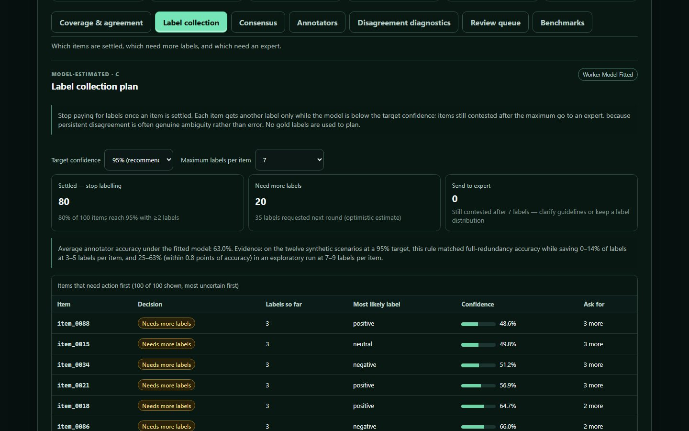

DataQual
Evidence-driven annotation quality, review prioritization and adaptive label collection.
Turns raw multi-annotator labels into agreement statistics with intervals, consensus under different assumptions (majority vote vs. a from-scratch Dawid–Skene worker model), annotator reliability with credible intervals, explainable disagreement flags and a ranked review queue. Its newest module decides, item by item, whether to stop paying for labels, ask for more, or escalate to an expert.
- 25–63%fewer labels at 7–9 labels per item, within 0.8 accuracy points (exploratory)
- +27.4 ptsaccuracy over majority vote when some annotators are adversarial
- 100%label parity with the Crowd-Kit reference on a real benchmark
Evidence · 12 synthetic scenarios · 5 seeds each
How many labels does each item really need?
- Adaptive: stop when confident
- Collect every label
Exploratory design, not pre-registered: the scenarios were re-run with 7–9 labels per item to test whether savings grow with redundancy.
Show the data
Labels per item, averaged over seeds 100–104 (simulator 1.1.0). Source: docs/evidence/adaptive-collection.
When does a worker model beat a plain vote?
Modeling each annotator’s reliability pays off where annotators differ: +27.4 points with adversarial annotators and about +13 with correlated or sparsely overlapping ones. Where annotators are similarly reliable, the two methods stay within a point of each other.
- Dawid–Skene worker model
- Majority vote
Show the data
Accuracy against hidden truth using every label, 3–5 per item. Same source as label savings.
